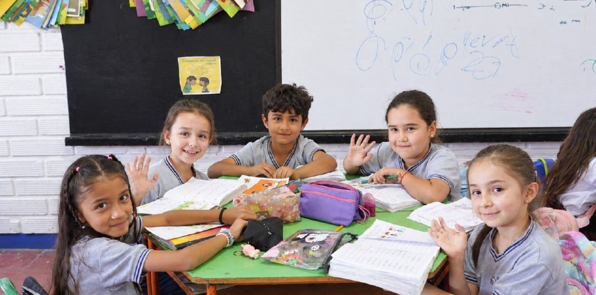

Alfabetización Inicial
Alfabetización Inicial Con ATAL
Implementas el método fonético sistemático con los materiales ATAL. Un facilitador te acompaña en el aula en tres fases: modelación, coanimación y observación.
Ver materialesEstrategia ALFA
Materiales pedagógicos, videos y acompañamiento para implementar ATAL, Kalulu y Avanza+ en tu aula.
Tu rol en ALFA
ALFA se apoya en tu experiencia: tú llevas la propuesta al aula y dinamizas el cambio en tu institución educativa.
Implementas el método fonético sistemático con los materiales ATAL. Un facilitador te acompaña en el aula en tres fases: modelación, coanimación y observación.
Ver materialesIdentificas a los estudiantes que aún no han consolidado la lectura e implementas las rutinas Kalulu, con videos de apoyo y encuentros de formación.
Ver materialesAcompañas a estudiantes de secundaria que requieren apoyo para fortalecer la fluidez, la comprensión y la escritura.
Ver materialesEl acompañamiento en el aula
Para docentes de transición y primero, un facilitador realiza visitas durante el año siguiendo esta progresión.
El facilitador demuestra paso a paso la secuencia instruccional frente al grupo.
El facilitador y tú dirigen la clase juntos, compartiendo el liderazgo pedagógico.
Tú implementas de forma autónoma mientras el facilitador observa y retroalimenta.
Recursos y materiales
Elige el programa y el grado. Cada material se abre en Drive para verlo o descargarlo.
 Cuaderno de trabajo · Unidad 1Lectura y escritura, primera unidad.
Cuaderno de trabajo · Unidad 1Lectura y escritura, primera unidad.
 Cuaderno de trabajo · Unidad 2Lectura y escritura, segunda unidad.
Cuaderno de trabajo · Unidad 2Lectura y escritura, segunda unidad.
 Cuaderno de trabajo · Unidad 3Lectura y escritura, tercera unidad.
Cuaderno de trabajo · Unidad 3Lectura y escritura, tercera unidad.
 Cuaderno de trabajo · Unidad 4Lectura y escritura, cuarta unidad.
Cuaderno de trabajo · Unidad 4Lectura y escritura, cuarta unidad.
 Libro de cuentosTextos para el lenguaje oral y la comprensión lectora.
Libro de cuentosTextos para el lenguaje oral y la comprensión lectora.
 Guía pedagógicaFundamentos y rutinas de implementación en segundo grado.
Guía pedagógicaFundamentos y rutinas de implementación en segundo grado.
 Calendario KaluluPlanificador de sesiones para organizar el trabajo en el aula.
JuegoRevueltosKALULU
Juego RevueltosRefuerza las correspondencias grafema-fonema.
JuegoBingoKALULU
BingoBingo pedagógico para reforzar el aprendizaje fonético.
HerramientaLectómetroKALULU
LectómetroHerramienta para medir el nivel lector de los estudiantes.
RecursoHoja de pauta MontessoriKALULU
Hoja de pauta MontessoriPapel con triple línea para guiar el trazo de las letras.
Calendario KaluluPlanificador de sesiones para organizar el trabajo en el aula.
JuegoRevueltosKALULU
Juego RevueltosRefuerza las correspondencias grafema-fonema.
JuegoBingoKALULU
BingoBingo pedagógico para reforzar el aprendizaje fonético.
HerramientaLectómetroKALULU
LectómetroHerramienta para medir el nivel lector de los estudiantes.
RecursoHoja de pauta MontessoriKALULU
Hoja de pauta MontessoriPapel con triple línea para guiar el trazo de las letras.
Webinar · Miércoles 29 de abril
Grabación del webinar para docentes de segundo grado de Antioquia que buscan potenciar la alfabetización inicial en sus aulas. Conoce el método Kalulu y el material que está llegando a las instituciones educativas.
Descargar presentaciónSerie Kalulu en el aula · Video 1
Presenta Kalulu como parte de la Estrategia ALFA para las niñas y los niños de segundo grado que aún no han consolidado la lectura. Explica qué significa recuperar aprendizajes, en qué consiste la enseñanza fonética explícita, cómo se relaciona con la ciencia de la lectura y qué ventajas tiene el programa para estudiantes y docentes.
Serie Kalulu en el aula
4Así se desarrolla el programa Kalulu a lo largo de una semana
Paneles subregionales
Encuentros presenciales para docentes de preescolar y primaria en cada subregión: un panel con invitados y aulas interactivas donde se simulan clases con Aprendamos Todos a Leer y Kalulu.

Próximo panelSubregión Occidente
Miércoles 18 de noviembre de 2026 · 2:00 p. m.
I. E. San Luis Gonzaga, sede secundaria · Cra. 7 n.º 13A-64, Santa Fe de Antioquia
Carepa · 28 de octubre
Conversación con los panelistas invitados e intervenciones de los docentes. Diapositivas de las cuatro aulas interactivas:
Podcast
Conversaciones con docentes y especialistas sobre cómo aprenden a leer los niños y las niñas, y qué pasa en las aulas de Antioquia con la Estrategia ALFA.
Episodios
Tips ALFA
Piezas cortas sobre cómo se aprende a leer y qué hacer en clase. Toca una para verla; avanza sola y también puedes usar las flechas.
Únete al canal de docentes en WhatsApp para recibir videos de apoyo, orientaciones y novedades de la Estrategia ALFA.